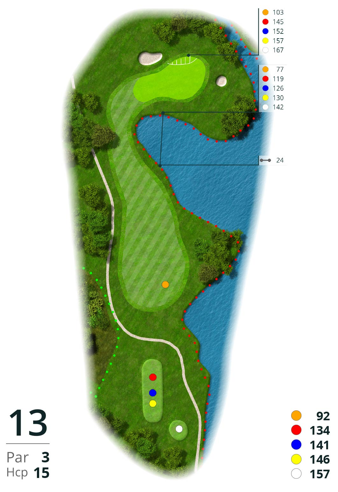

Alle spelers slaan bij elke hole af. Vervolgens kiest het team gezamenlijk de beste van de vier ballen om mee verder te spelen. Vanaf de gekozen positie slaan alle vier spelers opnieuw (de andere drie spelers droppen hun bal binnen één stoklengte van de gekozen positie). Elke speler speelt steeds verder met zijn eigen bal. Na iedere slag kiest het team weer de beste bal, totdat de hole is uitgespeeld. Op deze manier wordt per hole een teamscore genoteerd. Dit is een relatief snelle spelvorm en wordt meestal gespeeld in de Stableford-variant.


